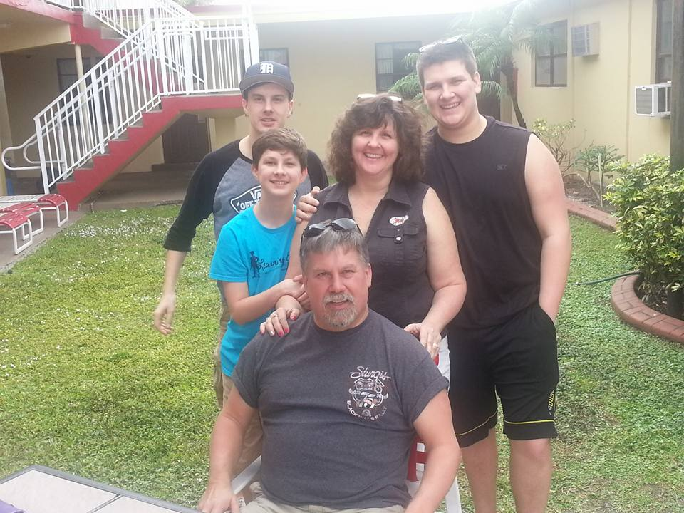

I was born and raised in South Berwick, Maine. South Berwick wasn't a huge town, at the time, maybe 7,000 people or so. It was driving distance from the University of New Hampshires main campus in Durham. It was a nice place to grow up. Nothing bad ever happened, was out of the way from most of the town, but was only a half an hour to downtown Portsmouth and Kittery.
My Parent, Steve and Christine Wengert met in Seattle while my Dad was in the Navy and my Mom was in there living with some family. After the first time they met, you could tell that they were going to be great friends. After becoming best friends, my Mom decided to move back to her home town of Greenland, New Hampshire (Just outside of Portsmouth). Without a second though, my Dad packed up his Jeep Wrangler and drove across the country and moved to Portsmouth to finally ask out my Mom. She decided to that "one date couldn't hurt." After about a year of they got engaged and the following year got married.
Soon my parents know that South Berwick was going to be their home. They decided to buy a home and start a family. One kid turned into two, Andrew, and two (the surprise of the three of us) turned into a third boy, Chris.
Unlike most families today, even with three young boy's in the house, the adults always out numbered the kids. Since I was about 10 years old, my Mom sister, Bonnie, has been living with my family in South Berwick. At that same time the Bonnie moved in, our grandparents from Florida into the house. When they unfortunately passed away, some of my cousins fell on some hard times and soon there was at one time 8 people living in our house.
To this day I wonder what my life would be like if it was just my parents, my brothers and I. But everytime I do, it feels like someone or something is left out. Even though my childhood was generally not the norm for most people, or maybe seen as strange, I couldn't imagine my start any other way. All those family members in my house growing up helped me become the man that I am today.
Family is what made me who I am today, and my family is who I am.
Back to Home.